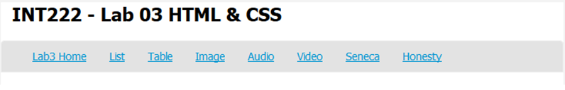

Section D: Wednesday, Oct 19, 2016 - 23:59
Grade value: 5% of your final course grade
Work with HTML, CSS, and get experience of creating and maintaining a web site.
This lab contains two parts - part A and part B. In part A you’ll work on basic coding tasks for a simple web site. In part B you’ll play on page styling tasks on a web page.
Part A – 6 marks
Download and unzip the Lab03A-template.zip file. Inside the compressed package, there are eight html files - index.html, audio.html, honesty.html, image.html, list.html, seneca.html, table.html and video.html – and two folders, under which there are three resource files – ict.png, music.mp3 and seneca_college.mp4. Unzip this zip file and open any HTML file, you will find a menu on the top of the web page:

Each item/link on the menu is corresponding to an HTML file listed above. Note: the link Lab3 Home is to the index.html page (Home page). The tasks of your lab 03 are to edit and update each HTML file based on the requirements described below.
Task 1: work on the “Lab3 Home” page – index.html
• Add a professional greeting to the visitor, e.g. "Welcome to my website, I will be demonstrating HTML5 & CSS3 principles and techniques...".
• Add a short paragraph that introduces this website, e.g. "This site contains 8 pages, including: Home, List, Table"...NOTE: The paragraph must include relative links to all the pages within the website.
• Add a short paragraph introducing HTML 5.
• For the CSS properties background, text and font, create at least 2 CSS rules with different properties and values for each of them, using internal CSS.
• Create at least 2 CSS rules with different properties and values only for the hyperlinks created by yourself, using internal CSS.
Task 2: work on the “List” page – list.html
• Create a nested list with meaningful items.
• The nested list should contain at least one ordered list and at least one unordered list.
• Create at least 2 CSS rules with different properties and values for list styling, using internal CSS.
Task 3: work on the "Table” page – table.html
• Create two HTML tables:
o The 1st table should be composed of the elements: <table>, <tr>, <th>, <td>, <caption> with meaningful table contents.
o The 2nd table should be composed of the elements: <table>, <tr>, <th>, <thead>, <tfoot> and <tbody> with meaningful table contents.
• Create a (sub) folder named css in your web directory and create a css file named mystyle.css in the created folder css. Complete the following CSS rules in the file (using external CSS).
o Create CSS rule to set margin, padding for table cells (<td> and <th>)
o Create CSS rule to set border of table for the first table (hint: you may use id selector for the first table)
o Create CSS rule to set border of table cells for the first table (hint: you may use id selector and contextual selector). Use shorthand format for setting the border.
o For the 2nd table, create CSS rules to set different background and text colors for table cells with table head, table foot and table body.
Task 4: work on the "Image” page – image.html
• Find the image and its URL from http://www.senecacollege.ca/ website. Without download this image file, show the image in your web page. When the image is not available online, show text “Seneca College” on the page. Make the image a hyperlink to the Seneca website.
• Find the given image with the file named ict.png under the image folder. Show the image in your web page. When the image is not available, show text “ICT School, Seneca College” on the page. Make the image a hyperlink to the ICT School website.
• Use inline CSS to set the dimension (height and width) for the two images.
Task 5: work on the “Audio” page – audio.html
• Create an <audio> element to play the provided file music.mp3 under the media folder.
• The player mush have controls and automatically start when page is loaded.
• The <audio> element must be created in <figure> element with <figcaption>.
• Use external CSS to make the border of figure styled.
Task 6: work on the “Video” page – video.html
• Create an <video> element to play the provided file seneca_college.mp4 under the media folder.
• The player mush have controls and automatically start when page is loaded.
• The < video > element must be created in <figure> element with <figcaption>.
• Use external CSS to make the border of figure styled.
Task 7: work on the “Seneca” page – seneca.html
• Copy several paragraphs (with appropriate headings) about Seneca College from Seneca college or Wikipedia website.
• Create at least two <div> elements which contain/group paragraphs. Create at lest four <span> elements which contain words or phrases.
• Create at least two id attributes with values to apply to <div>, <span>, <p> or heading elements you created.
• Create at least four class attributes with values to apply to <div>, <span>, <p> or heading elements you created.
• Create at lest two CSS rules for id and class you created using id selector and class selector responsively.
• Make sure that all the words of “Seneca” showed in your paragraphs or headings must be styled to red color and bold font.
• Use external CSS for this task.
Task 8: work on the "Honesty" page – honesty.html
• Add date and your name in the provided places to complete the honesty declarations.
Other Requirements or part A
• All tags/attributes must be in lower case.
• All HTML pages must pass the W3C's HTML Validation.
• CSS used in the lab must pass the W3C CSS validation.
• Any error(s) for HTML and/or CSS validation will result in 25% penalty for the grade of your lab.
Part B – 2 marks plus 1 bonus mark
Download the Lab03B-template.zip file and unzip the package. You will find an html file - canadianPT.html and a folder images with a number of images inside. Based on what you have been provided, complete the 8 tasks below, and mimic the screenshots as more as you can. The screenshots for each task is as following:
Screenshot before start: template-screenshot
Task 1: Creating a CSS file for the page
• Create a CSS file named sitecss.css and embed the CSS file into the provided HTML file: canadianPT.html. All your CSS rules should be in the sitecss.css file.
• Set page background use the provided image: images/canada_theme.jpg, and expend the background to the whole page.
• Center the heading.
• After completing this task, the web page should be like: task1-screenshot
Task 2: Specify width for the page
• If the target screen resolution width is 1024, you may set the width of the web page to 960px, 900px, or other values. But here, we use a relative width setting.
• Center the page.
• After completing this task, the web page should be like: task2-screenshot
• Hint:
body { … … width: 85%; margin: 0 auto;}
Task 3: Place navigation bar
In this step we will arrange for the navigation bar to be placed on the left part of the page, and under the header.
• Give the nav a width, and
• Float it to the left.
• After completing this task, the web page should be like: task3-screenshot
• Hint:
nav { width: 250px; float: left;}
Task 4: Clear space under navigation bar
• To stop wrapping under the navigation bar, give a width to main section, and
• float it to the left.
• Hint:
.main { width: 60%; /* width: 600px; */ float: left;}
• Take the footer underneath the nav and main section block, set the clear property of footer to both.
• After completing this task, the web page should be like: task4-screenshot
• Hint:
footer { clear: both; }
Task 5: Position the Canada flag and text
• Set the size of the Canada flag.
• Hint: use the combination of ID selector and contextual selector:
#CA img { width: 50px; }
• Set the font size of the Canada text.
• Position the flag and text to the top-right corner relative to the browser window (as showed in the screenshot).
• After completing this task, the web page should be like: task5-screenshot
• Hint: use fixed position.
Task 6: Create float-based grid
• Set the flag sizes of all provinces and territories – width: 100px;
• Display the information (flags and text) of provinces and territories in a grid with the size of 220px x 200px.
• After completing this task, the web page should be like: task6-screenshot
• Hint:
.province{ float: left; width: 220px; height: 200px;}
Task 7: Wrap the flags with Text
• Use the following code to make the text wrap the provincial flag images with text:
.province img { float: left; margin: 5px;}
• After completing this task, the web page should be like: task7-screenshot
Task 8: final work
• Remove the list style for the list of provinces and territories in the nav block at the left of the page.
• Decorate the heading with text-shadow.
• Wrap <div> of each province with border, the set margins, paddings and text color.
• After finish your code, resize the window of your web page (don’t change the code) to see the effect. (Float-based grid can make your page fit to different size screens, such mobile screen.)
• In Firefox, type Ctrl+Shift+C to open the Inspector window – a tool for web developers. Check the HTML elements in the web page and CSS rules which apply to them.
• After completing this task, the web page should be like: task8-screenshot and resize-screenshot.
Other Requirements for part B
• Use CSS comments to label your CSS rules, e.g. /* Task 8 */
• The HTML page must pass the W3C's HTML Validation.
• CSS used in the lab must pass the W3C CSS validation.
• Any error(s) for HTML and/or CSS validation will result in 25% penalty for the grade of your lab.
• Enclose the following declaration with your name and date at the top of your sitecss.css file:
/********************************************************************
I declare that my assignment is wholly my own work in accordance with Seneca Academic Policy. No part of this assignment has been copied manually or electronically from any other source (including web sites) except for the information supplied by the INT222 instructors and / or made available in this assignment for my use.
I also declare that no part of this assignment has been distributed to other students.
Name: (your name here)
Dated:
********************************************************************/
• Compact your lab03 part A files including all directory structures into a zip file named lab03-partA.zip.
• Compact your lab03 part B files including all directory structures into a zip file named lab03-partB.zip.
• Submit both lab03-partA.zip and lab03-partB.zip files to the Blackboard (My.Seneca).
• NO LATE SUBMISSIONS for labs. Late Lab submissions will not be accepted and will receive a grade of zero (0).
• After the end (23:59) of the due date, the lab submission link on the Blackboard will no longer available.
• All INT222 labs are subject to change after released. It's your responsibility to keep your lab assignments up to date before the lab is submitted.